Ringhomomorphismus und Ringisomorphismus
- 1. Ringhomomorphismus:
- Es seien 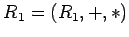 und 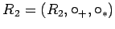 Ringe. Eine Abbildung 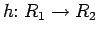 heißt Ringhomomorphismus, wenn für alle 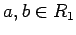 gilt:
- 2. Kern:
- Der Kern von h ist die Menge aller Elemente aus 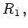 die bei h auf das neutrale Element 0 von (R2,+) abgebildet werden, und wird mit 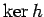 bezeichnet:
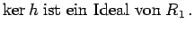
- 3. Ringisomorphismus:
- Ist h außerdem bijektiv, so heißt h Ringisomorphismus, und die Ringe R1 und R2 heißen zueinander isomorph.
- 4. Faktorring:
- Ist I ein Ideal eines Ringes 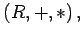 so wird die Menge der Nebenklassen 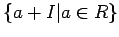 von I in der additiven Gruppe (R,+) des Ringes R bezüglich der Operationen (s. Definition und Eigenschaften von Gruppen)
zu einem Ring, dem Faktorring von R nach I, der mit R/I bezeichnet wird.
Die Hauptideale (m) von 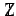 liefern als Faktorringe gerade die Restklassenringe 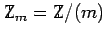
(s. Beispiele für Ringe und Körper).